🌑 Cena completa
Terreno lunar (grade deslocada por ruído + crateras), caverna, pedras e a Terra procedural. Veja a malha de todo o ambiente:


Toda a cena é modelagem autoral procedural (Python/bpy no Blender).
Abaixo, cada objeto em três vistas: final (materiais), clay (volume) e
wireframe (a malha poligonal construída).
moon_scene.blend — cada objeto está em sua
própria Collection. Cada robô tem a sua (Aranha_1…Aranha_4,
com materiais próprios), além de Foguete, Satelite, Bandeira, Terreno, Caverna e Terra.
Selecione e use Wireframe / Edit Mode para inspecionar a malha. Toda a
construção está comentada em moon_scene.py.
Corpo em dois segmentos (cefalotórax + abdome) feitos de elipsoides; cabeça-sensor de vidro com cluster de 3 olhos e faróis; 6 pernas de três segmentos (coxa, fêmur, tíbia) como cilindros tronco-cônicos com joelho alto e esferas nas juntas; antena e sonda dianteira. Cada uma das 4 aranhas tem cores próprias.
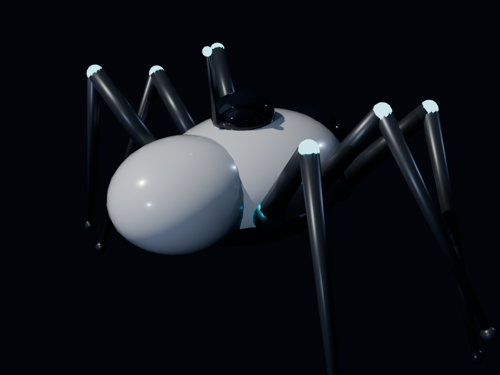
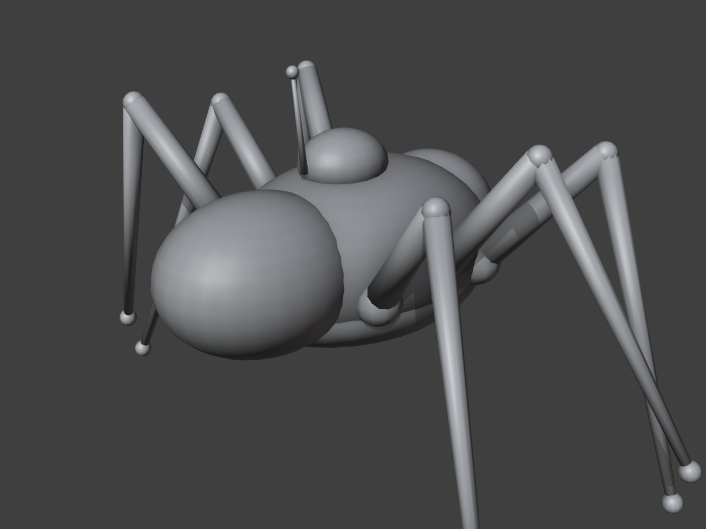
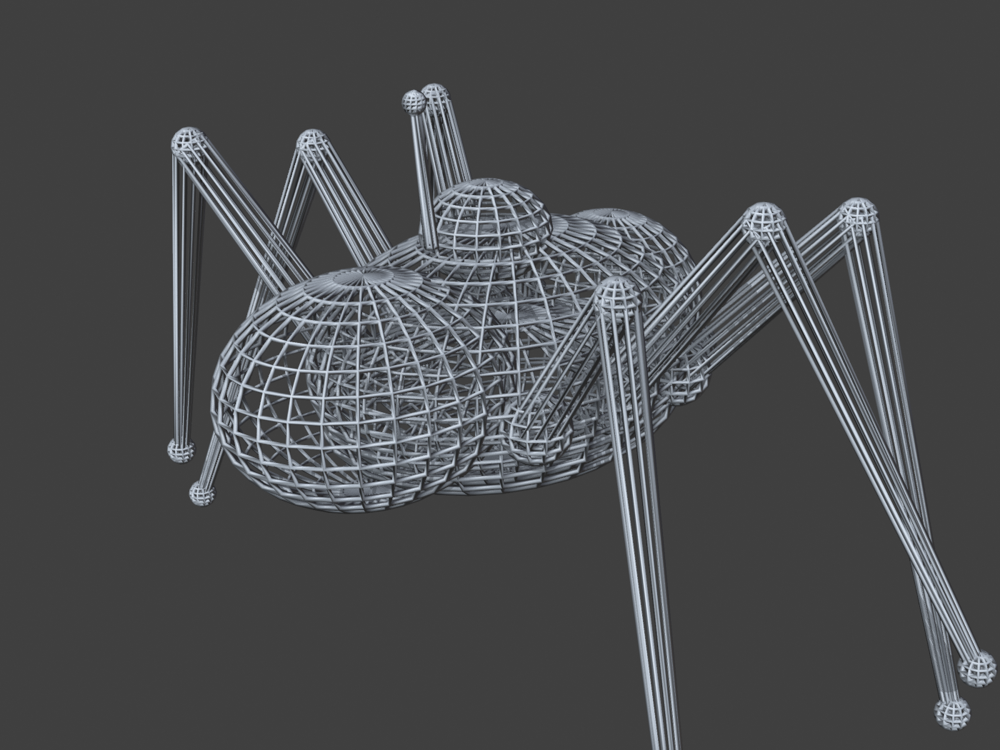
Base robusta: estágio de descida octogonal com saia de pouso, motor com sino, verniers, tanques e 4 pernas A-frame com sapatas largas; por cima, o corpo do foguete com nariz cônico, aletas, janelas de vidro, faixas e antena.
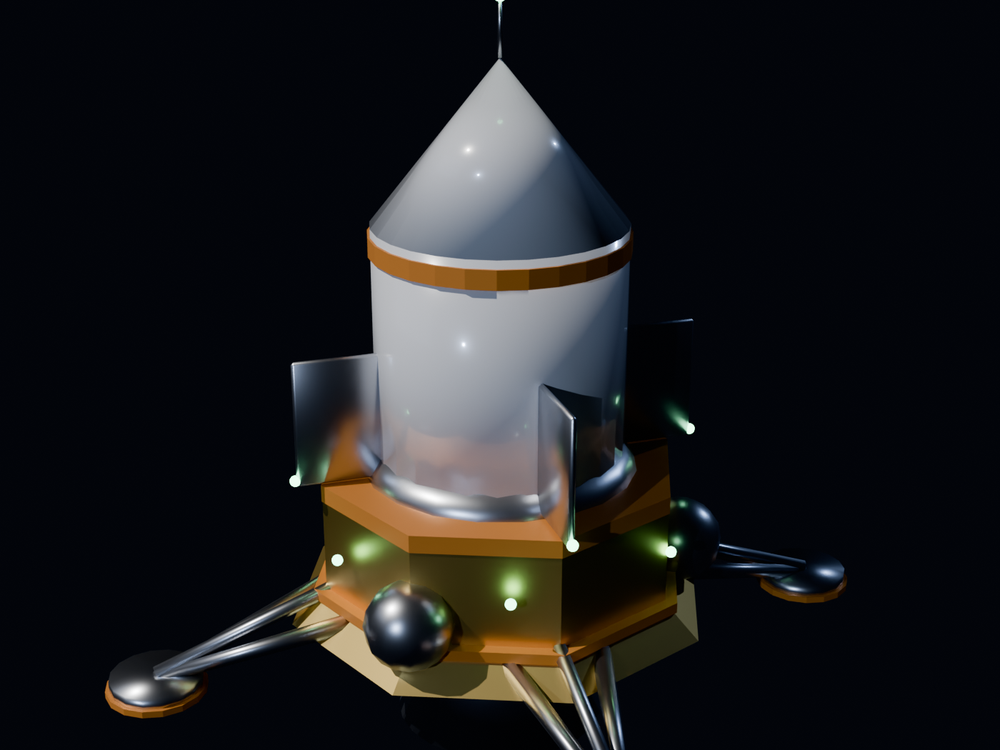
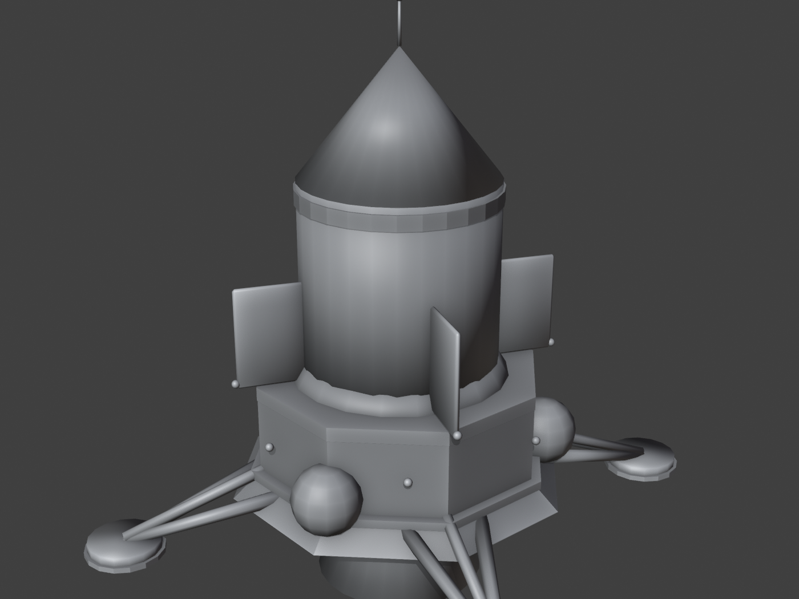
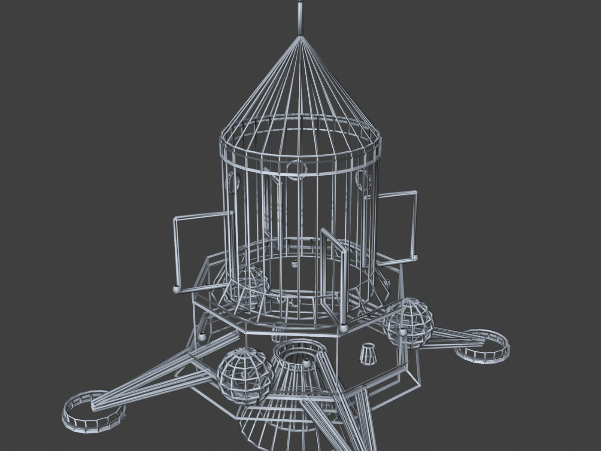
Corpo central como caixa chanfrada (bevel) com módulo superior; dois painéis solares (caixas finas) com textura procedural Brick simulando as células; antena parabólica (elipsoide achatado) com haste e feed-horn; antenas e luzes de status emissivas.
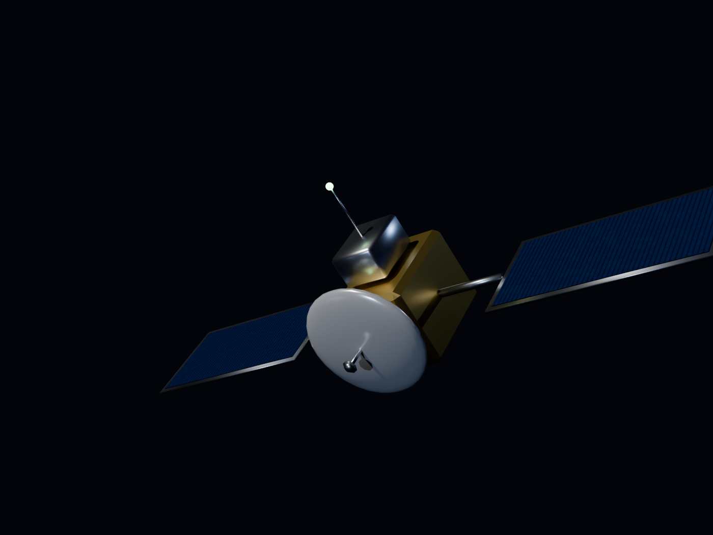
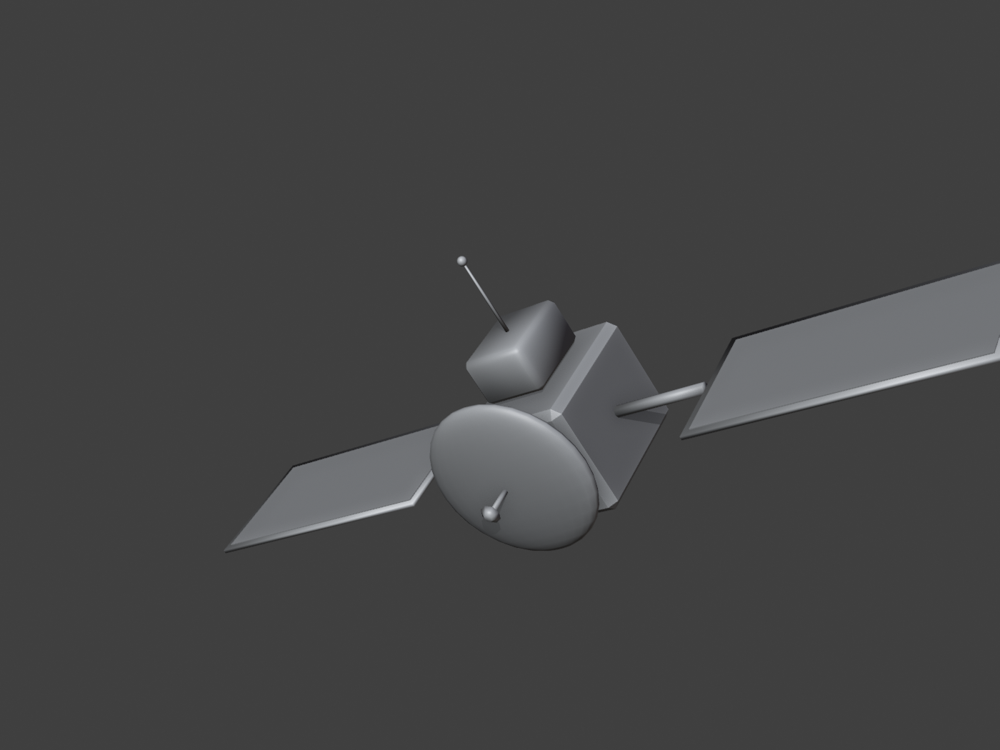
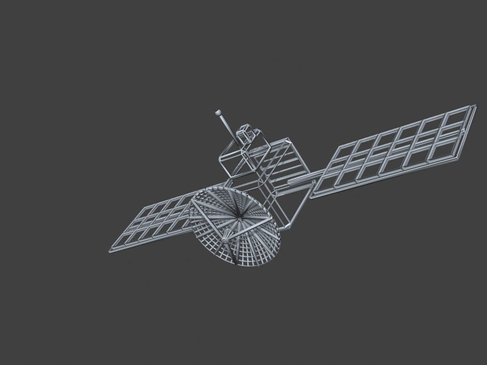
Mastro como cilindro; o pano é montado por regiões geométricas planas: campo verde (retângulo), losango amarelo (quad), círculo azul (disco/leque de triângulos) e a faixa branca — empilhadas nos dois lados para leitura de qualquer ângulo.
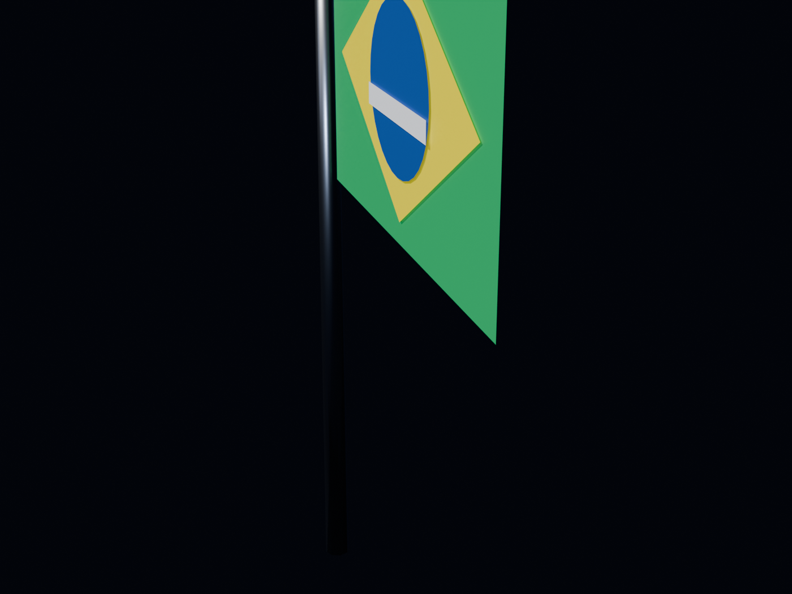
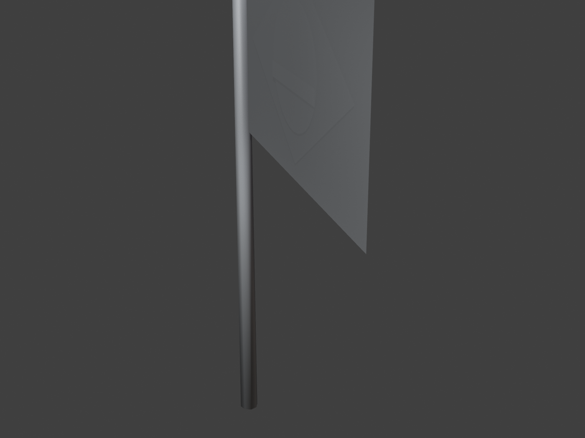
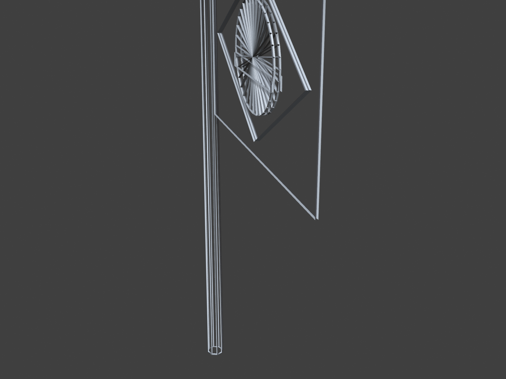
Terreno lunar (grade deslocada por ruído + crateras), caverna, pedras e a Terra procedural. Veja a malha de todo o ambiente: